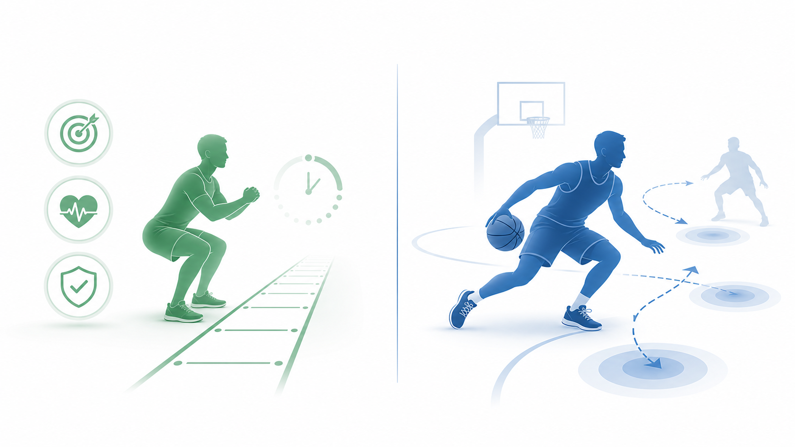

Day 38 中午复习：环境因素与运动控制技能分类
复盘今天早上的新知识，并按艾宾浩斯间隔回看 Day 37、Day 35、Day 31、Day 24。
工作日 12:00主动回忆1/3/7/14 天复习
标题区
今天的核心线索：环境会先改变身体能承受的负荷，运动技能分类会决定练习要不要加入移动、变化和反应。先管风险，再管动作难度。
今日新知识速复盘

Day 38 · 今日
环境因素与运动控制技能分类
- 热环境：热适应表现为更早出汗、更好散热；重点是预防热疾病。
- 冷环境：肌温下降会影响发力与协调，正式训练前要充分热身。
- 高原低氧：急性反应常见心率和呼吸上升，慢性适应才涉及红细胞增多。
- Gentile 分类：看身体稳定/移动，也看环境是否变化。
- 封闭技能如深蹲更可预测；开放技能如网球、篮球需要反应和决策。
艾宾浩斯复习区（1/3/7/14 天）


主动回忆题
1. 今天内容：夏季户外训练时，为什么不能只按原计划强度执行？
热环境会提高散热和心血管负担，先调整时段、强度、时长和补液，再看心率、RPE 与异常症状。
2. 今天内容：Gentile 技能分类最少要抓住哪两个判断？
看身体是稳定还是移动，再看环境条件是稳定还是变化；更完整时还会考虑是否操作物体。
3. Day 37：DOMS 为什么常在训练后第二天更明显，而不是训练结束立刻最明显？
DOMS 与离心收缩后的微损伤和炎症反应有关，需要时间发展；不是乳酸在肌肉里停留两天。
4. Day 35：新手前几周力量增长很快，但围度变化不明显，优先说明什么？
优先说明神经适应和动作协调改善，包括运动单位募集、放电频率和同步化效率提高。
5. Day 31：PAR-Q+ 中任一问题回答“是”，训练安排上应先做什么？
先进一步评估风险，必要时获取医师许可或转诊，而不是直接进入高强度训练。
6. Day 24：氧化系统最适合支持什么类型的运动？底物如何随强度变化？
适合 2 分钟以上、长时间低到中等强度活动。低强度脂肪供能占比更高，强度提高后糖供能占比增加。
错因辨析
把“出汗多”当作热适应完成
出汗提前只是线索之一，还要看心率、主观用力、体温控制和异常症状。
把 DOMS 当作乳酸堆积
乳酸通常较快清除，延迟性酸痛更应联系离心负荷、微损伤和炎症反应。
跳过筛查直接开练
PAR-Q+ 和风险分层是训练介入前置步骤，尤其是心血管、肺部、代谢病和异常体征。
把氧化系统理解成只烧脂肪
糖、脂肪和蛋白质都可参与氧化供能；强度越高，糖的参与通常越明显。
今日复盘
今天先把 Day 38 的“环境风险 + 技能分类”放进训练设计顺序：先判断热、冷、高原等环境压力，再决定动作要从封闭到开放、从稳定到变化如何进阶。
间隔复习的连接点是：Day 31 先筛查风险，Day 24 判断长时运动供能，Day 35 理解训练适应，Day 37 识别疲劳和 DOMS。合在一起，就是“能不能练、靠什么供能、练后怎么适应、何时需要恢复”。